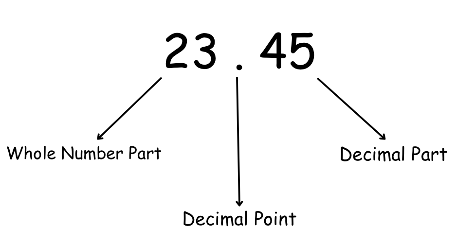
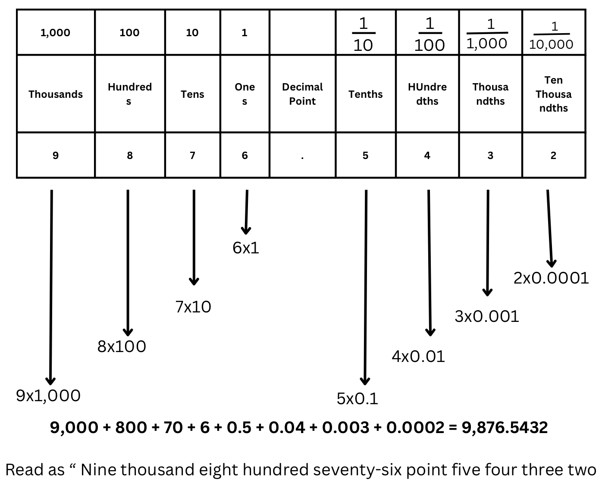
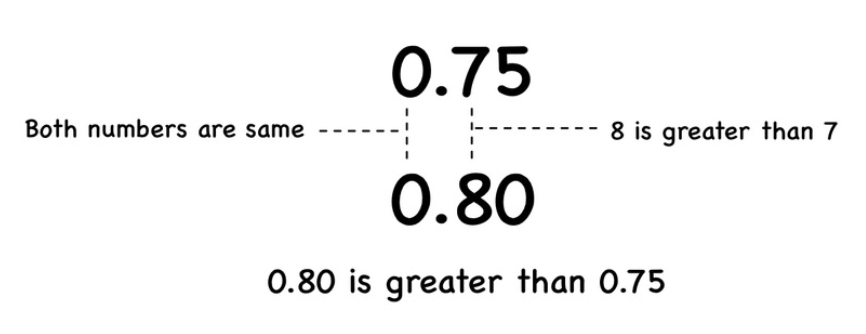

Decimal:
A decimal number consists of a whole number part and a fractional part, separated by a decimal point.
Example: In the decimal 23.45, 23 is the whole number part, and 45 is the fractional part, which represents 45 hundredths.

Place Value in Decimals :
Place value refers to the position of a digit in a number, which determines its value. In decimals, this concept extends beyond the decimal point. To the left of the decimal point, each position represents an increasing power of ten as you move towards the left. To the right of the decimal point, each position represents a decreasing fraction (or division) of ten.

Note: 10-1 = = 0.1, 10-2 = = 0.01, 10-3 = = 0.001 and so on.
Decimal Places :
The number of digits located to the right of the decimal point in a decimal number determines the number of decimal places.
Example: 2.8 has one decimal place, 3.21 has two decimal places and 3.125 has three decimal places.
Equivalent Decimals :
Equivalent decimals are decimal numbers that have the same value.
Example: 0.3 and 0.30 are equivalent decimals.
Note : Adding zeros to the right of a decimal point does not change the value of the number.
For example: 3.5 is equivalent to 3.50, 3.500, or 3.5000. You can add as many zeros as you like after the decimal point without altering the numerical value of the decimal.
Like and Unlike Decimals
Like Decimals :
Like decimals are decimal numbers that have the same number of digits after the decimal point. Their precision level is identical, which makes calculations such as addition and subtraction straightforward since the digits are already aligned.
Unlike Decimals :
Unlike Decimals have different numbers of digits after the decimal point, requiring adjustments to perform mathematical operations. Aligning the decimal places is a necessary step before proceeding with calculations.
Examples of Like and Unlike Decimals
-
Like Decimals:
- Example Numbers: 3.45, 2.35, 8.65
- Explanation: Each of these numbers has two digits following the decimal point, making them like decimals.
-
Unlike Decimals:
- Example Numbers: 0.5, 2.345, 7.1
- Explanation: These numbers have varying digits after the decimal point, making them unlike decimals. The first has one digit, the second has three, and the third has one.
Aligning Unlike Decimals :
Before you can add, subtract, or compare unlike decimals effectively, you must first align them by converting them into like decimals. This is done by adding zeros to the end of the decimal part of numbers until all have the same number of decimal places.
Example of Aligning Unlike Decimals:
- Original Numbers: 0.5, 2.345, 7.1
- Aligned Numbers: 0.500, 2.345, 7.100
Now, all numbers are like decimals with three digits after the decimal point.
Comparison of Decimal Numbers :
Comparing decimal numbers is a fundamental skill in mathematics that enables us to understand the relative sizes of different values. This concept is crucial for everyday activities such as measuring, shopping, and dealing with money. Understanding how to compare decimals allows us to determine which numbers are greater in given numbers or if they are equal.
Basic Rules for Comparing Decimals
When comparing decimal numbers, the process involves examining the digits from left to right, starting with the whole number part to the left of the decimal point. If these are equal, the comparison proceeds to the digits immediately to the right of the decimal point. Here are the steps and rules:
- Align the Numbers: Ensure the decimal points are lined up horizontally or vertically.
- Add Zeros if Necessary: To make comparison easier, you can add zeros to the end of decimals to give them the same number of decimal places.
- Compare Digit by Digit: Starting from the leftmost digit, compare each pair of digits until you find a pair that is different. The number with the larger digit in that place is the greater number.
Example 1: Simple Comparison
- Numbers: 0.75 and 0.8
- Aligned for Comparison:
- 0.75
- 0.80
- Comparison:
- Compare Whole Numbers: Both numbers have 0 to the left of the decimal point, so they are equal in the whole number part.
- Compare tenths: 7 (in 0.75) vs 8 (in 0.8). Since 8 is greater than 7, 0.8 is greater than 0.75.
Result: 0.8 is greater than 0.75.

Example 2: Comparing Longer Decimals
- Numbers: 3.14159 and 3.14156
- Aligned for Comparison:
- 3.14159
- 3.14156
- Comparison:
- Compare Whole Numbers: Both numbers have 3 to the left of the decimal point, so they are equal in the whole number part.
- Compare ones, tenths, hundredths, thousandths, ten-thousandths: all digits match.
- Compare hundred-thousandths: 9 (in 3.14159) vs 0 (in 3.14156). Since 9 is greater than 0, 3.14159 is greater than 3.14156.
Result: 3.14159 is greater than 3.14156.